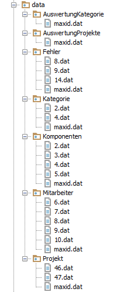
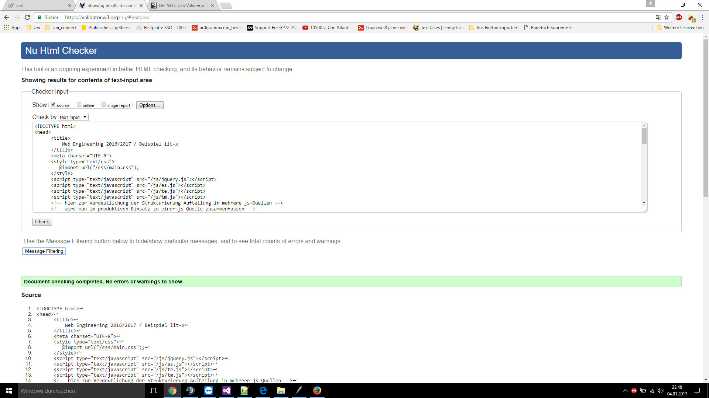

Gruppe C >Thomas, Nowicki, 1043815 >Elbers, Lennart, 1005523 >Voß, Dustin, 969942
05.01.2017
[TOC]
1. Einleitung
"Bug-Tracker" sind ein Hilfsmittel bei der Qualitätssicherung von Software-Entwicklungsprojekten: erkannte Mängel werden proto- kolliert und weitere Bearbeitungsvorgänge zur Beseitigung der Mängel angestoßen. Durch hinterlegte Datensätze werden die Projekt, Fehler, Kategorien sowie Komponenten hinterlegt und durch spezielle Auswertungsseiten benutzerfreundlicher angezeigt. Es ist eine Singlepageapplikation, die tabellarisch Informationen anzeigt und dynamisch mit AJAX nachlädt
2. Implementierung des Servers
------2.1 REST-Interface
Anforderungen an den Server nach REST-Prinzip:
Löst verschiedene Klassen nach Objekt-Dispatching auf und ruft die jeweiligen Funktion auf und gibt die Daten nach GET POST PUT DELETE auf.
------2.2 Module
application.py > Aufgabe: > >Beinhaltet alle Klassen für die Webanwendung. Mit Hilfe von REST werden bei bestimmten URI-Parameter die jeweiligen GET, POST, PUT - DELETE HTTP-Methoden ausgeführt. > >Datenhaltung, Importierung von Datenbanken, Anpassungen sowie falsch aufgerufene Anforderungen werden darin realisiert.
Klassen: >Projekt_cl: > > Aufgabe der Klasse: > > > Verwaltet Datenbestände aus den Projektdaten, innerhalb des Verzeichnisses "Projekt". Dient auch als ihre Schnittstelle.
Öffentliche Methoden: > init(self): > > Aufgabe: Initialisiert das Datenbankobjekt für die Projektdaten
GET(self, id): > Aufgabe: Erhält die Daten aus den Projekt
POST(self, data_opl): > Aufgabe: Erstellt neue Daten für die Projekte
PUT(self, data_opl): > Aufgabe: Aktualisieren Daten für die Projekte
DELETE(self, id): > Aufgabe: Löscht Daten aus den Projekten
Projektkomponente_cl: > Aufgabe der Klasse: > > Hilfsklasse um die Datenbanken Projekte sowie Komponenten zu verbinden!
Öffentliche Methoden: > init(self): > > Aufgabe: Erstellt Datenbankobjekte für Projekte sowie Komponenten
GET(self, id): > Aufgabe: Mit Hilfe der Projekt-ID werden alle Daten mit den in Kompentenen zugewiesenen Projekten ausgegeben.
ProjektfehlerAuswertung_cl: > Aufgabe der Klasse: > > Hilfsklasse um die Datenbanken Projekte, Fehler und Kompentenen zu verknüpfen
Öffentliche Methoden: > init(self): > > Aufgabe: Erstellt Datenbankobjekte für Projekte, Fehler sowie Komponenten
GET(self, id): > Aufgabe: Zunächst wird nach dem Projektnamen innerhalb der Komponenten gesucht um damit die restlichen Fehlerdaten zu extrahieren
ProjektKategorieAuswertung_cl: > Aufgabe der Klasse: > > Hilfsklasse um die Datenbanken Fehler und Kategorie zu verknüpfen
Öffentliche Methoden: > init(self): > > Aufgabe: Erstellt Datenbankobjekte für Fehler sowie Kategorie
GET(self, id): > Aufgabe: Filtert mit der übergebenen Kategorien-ID die Verwendeten innerhalb der Fehlerdatenbank
Komponenten_cl: > Aufgabe der Klasse: > > Verwaltet Datenbestände aus den Komponentendaten, innerhalb des Verzeichnisses "Komponenten". Dient auch als ihre Schnittstelle.
Öffentliche Methoden: > init(self): > > Aufgabe: Initialisiert das Datenbankobjekt für die Komponentendaten
GET(self, id): > Aufgabe: Erhält die Daten aus den Komponenten
POST(self, data_opl): > Aufgabe: Erstellt neue Daten für die Komponenten
PUT(self, data_opl): > Aufgabe: Aktualisieren Daten für die Komponenten
DELETE(self, id): > Aufgabe: Löscht Daten aus den Komponenten
Fehler_cl: > Aufgabe der Klasse: > > Verwaltet Datenbestände aus den Fehlerdaten, innerhalb des Verzeichnisses "Fehler". Dient auch als ihre Schnittstelle.
Öffentliche Methoden: > init(self): > > Aufgabe: Initialisiert das Datenbankobjekt für die Fehlerdaten
GET(self, id): > Aufgabe: Erhält die Daten aus den Fehler
POST(self, data_opl): > Aufgabe: Erstellt neue Daten für die Fehler
PUT(self, data_opl): > Aufgabe: Aktualisieren Daten für die Fehler
DELETE(self, id): > Aufgabe: Löscht Daten aus den Fehler
Mitarbeiter_cl: > Aufgabe der Klasse: > > Verwaltet Datenbestände aus den Mitarbeiterdaten, innerhalb des Verzeichnisses "Mitarbeiter". Dient auch als ihre Schnittstelle.
Öffentliche Methoden: > init(self): > > Aufgabe: Initialisiert das Datenbankobjekt für die Mitarbeiterdaten
GET(self, id): > Aufgabe: Erhält die Daten aus den Mitarbeiter
POST(self, data_opl): > Aufgabe: Erstellt neue Daten für die Mitarbeiter
PUT(self, data_opl): > Aufgabe: Aktualisieren Daten für die Mitarbeiter
DELETE(self, id): > Aufgabe: Löscht Daten aus den Mitarbeiter
Kategorie_cl: > Aufgabe der Klasse: > > Verwaltet Datenbestände aus den Kategoriedaten, innerhalb des Verzeichnisses "Kategorie". Dient auch als ihre Schnittstelle.
Öffentliche Methoden: > init(self): > > Aufgabe: Initialisiert das Datenbankobjekt für die Kategoriedaten
GET(self, id): > Aufgabe: Erhält die Daten aus den Kategorie
POST(self, data_opl): > Aufgabe: Erstellt neue Daten für die Kategorie
PUT(self, data_opl): > Aufgabe: Aktualisieren Daten für die Kategorie
DELETE(self, id): > Aufgabe: Löscht Daten aus den Kategorie
Application_cl: > Aufgabe der Klasse: > > Dient als Interface für die alle anderen Klassen, beinhaltet einen Handler, der den jeweiligen Klassen ihre URI's zuweist
Öffentliche Methoden: > init(self): > > Aufgabe: Initialisierung des URI-Handlers
DELETE(self, path_spl = 'Projekt', id=None, kwargs): > Aufgabe:** Weiterleitung der GET-Methode mit dem restlichen Keyvaluepaaren innerhalb der URI damit ?type-Anfrage realisiert werden kann
**default(self, *arguments, kwargs): > Aufgabe: Sollte eine falsche URI verwendet werden, gibts einen ERROR 404 der an den Client gesendet wird
database.py: > Aufgabe: > >Definiert das Datenbanksystem für unsere Anwendung.
Klassen: >Database_cl: > > Aufgabe der Klasse: > > > Oberklasse für alle anderen Datenbankklassen unserer Anwendung
Öffentliche Methoden: > init(self, type_spl): > > Aufgabe: Initialisierung des bestehender Datensätzen und speichert die Datensätze in ihren Verzeichnissen ab. Legt ein lokales Dictionary data_o zusätzlich an, als Arbeitskopie
create_px(self, data_opl): > Aufgabe: Erstellt eine neue Datei für einen neuen Datensatz, ID wird mittels maxid.dat festgehalten.
read_px(self, id_spl = None): > Aufgabe: Ließt die Defaultwerte oder selektiert Werte, wenn ID übergeben wird
update_px(self, id_spl, data_opl): > Aufgabe: Selektiert Werte aus dem jeweiligen Datensatz mittels ID und manipuliert diese und legt sie wieder ab.
getDefault_px(self): > Aufgabe: Standardmethode wird mittels Vererbung angepasst
readData_p(self): > Aufgabe: Liefert alle Daten zurück
nextId_p(self): > Aufgabe: Ließt nächste ID aus der maxid.dat aus und erhöht dann um 1
ProjektDatabase_cl(Database_cl): > Aufgabe der Klasse: > > Konkrete Klasse für die Datensätze aus Projekt
Öffentliche Methoden: > init(self): > > Aufgabe: Definiert konkrete Datenbank für Projekte erzeugen, Übergabe beinhaltet URI
getDefault_px(self): > Aufgabe: Definiert die Standardwerte für die Projekte innerhalb der neu angelegten Dateien.
FehlerDatabase_cl(Database_cl): > Aufgabe der Klasse: > > Konkrete Klasse für die Datensätze aus Fehler
Öffentliche Methoden: > init(self): > > Aufgabe: Definiert konkrete Datenbank für Fehler erzeugen, Übergabe beinhaltet URI
getDefault_px(self): > Aufgabe: Definiert die Standardwerte für die Fehler innerhalb der neu angelegten Dateien.
KomponenteDatabase_cl(Database_cl): > Aufgabe der Klasse: > > Konkrete Klasse für die Datensätze aus Komponente
Öffentliche Methoden: > init(self): > > Aufgabe: Definiert konkrete Datenbank für Komponenten erzeugen, Übergabe beinhaltet URI
getDefault_px(self): > Aufgabe: Definiert die Standardwerte für die Komponenten innerhalb der neu angelegten Dateien.
MitarbeiterDatabase_cl(Database_cl): > Aufgabe der Klasse: > > Konkrete Klasse für die Datensätze aus Mitarbeiter
Öffentliche Methoden: > init(self): > > Aufgabe: Definiert konkrete Datenbank für Mitarbeiter erzeugen, Übergabe beinhaltet URI
getDefault_px(self): > Aufgabe: Definiert die Standardwerte für die Mitarbeiter innerhalb der neu angelegten Dateien.
KategorieDatabase_cl(Database_cl): > Aufgabe der Klasse: > > Konkrete Klasse für die Datensätze aus Kategorie
Öffentliche Methoden: > init(self): > > Aufgabe: Definiert konkrete Datenbank für Kategorie erzeugen, Übergabe beinhaltet URI
getDefault_px(self): > Aufgabe: Definiert die Standardwerte für die Kategorie innerhalb der neu angelegten Dateien.
AuswertungProjekteDatabase_cl(Database_cl): > Aufgabe der Klasse: > > Konkrete Klasse für die Datensätze aus Auswertung
Öffentliche Methoden: > init(self): > > Aufgabe: Definiert konkrete Datenbank für Auswertung erzeugen, Übergabe beinhaltet URI
getDefault_px(self): > Aufgabe: Definiert die Standardwerte für die Auswertung innerhalb der neu angelegten Dateien.
AuswertungKategorieDatabase_cl(Database_cl): > Aufgabe der Klasse: > > Konkrete Klasse für die Datensätze aus Auswertung
Öffentliche Methoden: > init(self): > > Aufgabe: Definiert konkrete Datenbank für Auswertung erzeugen, Übergabe beinhaltet URI
getDefault_px(self): > Aufgabe: Definiert die Standardwerte für die Auswertung innerhalb der neu angelegten Dateien.
navigation.py: > Aufgabe: > >stellt Klasse Navigation_cl zur verfügung
Klassen: >Navigation_cl(object): > > Aufgabe der Klasse: > > > Lädt Einträge für Navigationsbar und legt gültige URI Adressen fest.
Öffentliche Methoden: > init(self): > > Aufgabe: keine
GET(self): > Aufgabe: liefert Datensatz gültiger URIs und der Texte für das Asside
templates.py: > Aufgabe: > >Stellt Klasse Templates_cl zur verfügung
Klassen: >Templates_cl(object):: > > Aufgabe der Klasse: > > > dynamisches sammeln von Daten fuer Templates durch übergebenen String der den Ordnerpfad der Templates enthält
Öffentliche Methoden: > init(self): > > Aufgabe: keine
GET(self): > Aufgabe: Jeder Ordner in dem übergeben Pfad wird nach Templatedateien durchsucht die zurückgegeben werden
Zusammenwirken der Module:
Die Application_cl stellt Schnittstelle fuer Datenhaltung dar und liefert Daten fuer Templates. Sie dient auch als Schnittstelle für den Client
Templates_cl liefert alle Templates aus
Navigation_cl definiert die Navigation und die liefert die URI der Aufrufe an den Client
------2.3 Datenhaltung
Datenstrukturen und Speicherung in Dateien:
Datenstruktur
3. Implementierung des Clients
------3.1 Klassen
app.js: > Application_cl: > > Aufgabe: > > >Kreiert die URI und stellt den Verzeichnispfad sowie den Datebank identifiert sowie den ApplicationVerifier für die REST Methoden bereit
detail.js: > DetailView_cl: > > Aufgabe: > > >Stellt PUT POST GET Methoden zur verfügung
SourceDetailView_cl: > Aufgabe: > >Unterklasse von DetailView_cl überschreibt checkContent_p Methode
list.js: > ListView_cl: > > Aufgabe: > > >definiert die Data-Aktionen die ausgeführt werden sollen. Stellt DELETE methode bereit. leichtes Benutzerhandling
nav.js: > Nav_cl: > > Aufgabe: > > >Navigationsbereich wird zur Verfügung gestellt
Application_cl fuert alle Klassen über den EventService zusammen ListView_cl und DetailView_cl verwenden die TemplateEngine um die Listen und Detail-Views zu generieren
------3.2 Eventservice
Einsatz des Eventservice: >Siehe Aufgabenstellung oder unten
Subscriber melden sich fuer Nachrichten an. Mittels publish_px wird ein Nachricht in einen Nachrichtenbuffer mit Prioritätsabfrage gelegt Die einzelnen Subscriber werden mittels der notify_px Schnittstelle informiert
Überprüfung des generierten Markups und der CSS-Stilregeln: > Hier stehen Notizen zur Überprüfung des generierten Markups un der CSS-Stilregeln! >  > > > > > >
 >
>  >
>  >
>  > >
> >